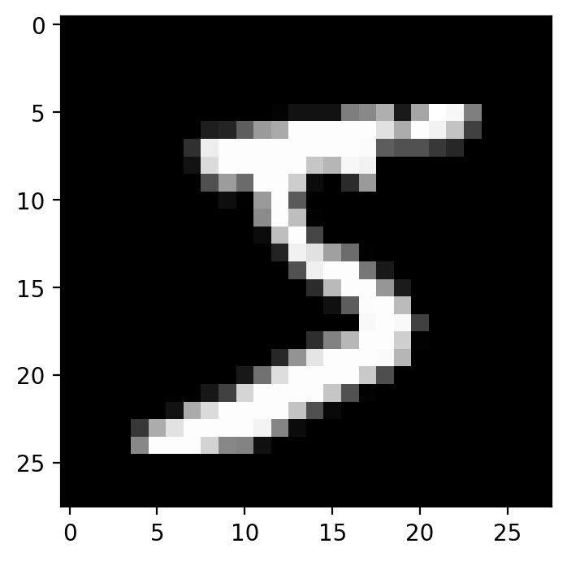
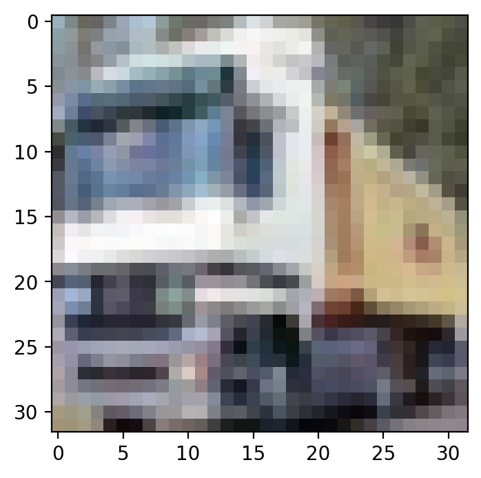
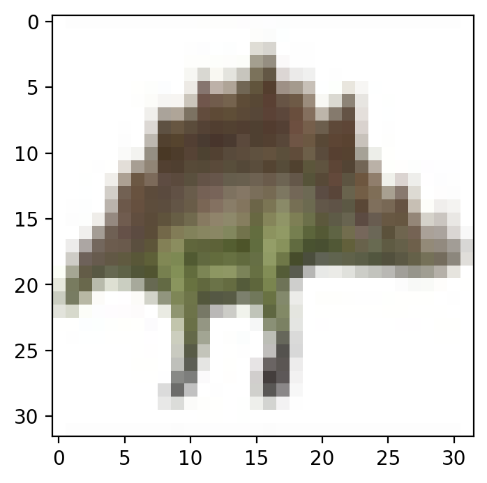
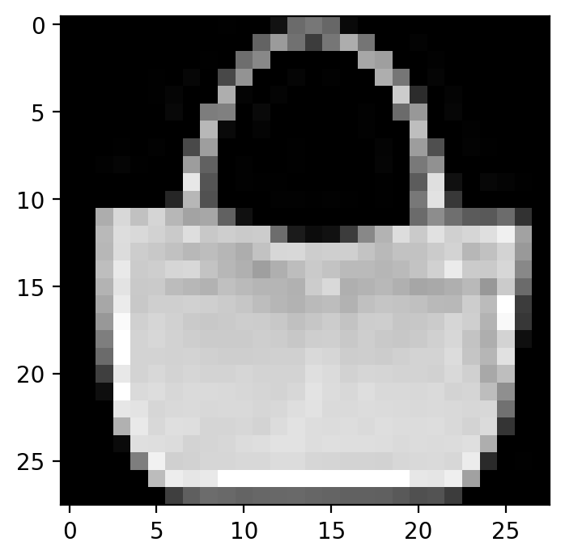

12.1.keras数据集
Windows 10
Python 3.7.3 @ MSC v.1915 64 bit (AMD64)
Latest build date 2020.03.09
tensorflow version: 2.1.0
from tensorflow import keras
from tensorflow.keras.datasets import boston_housing
from tensorflow.keras.datasets import imdb
from tensorflow.keras.datasets import reuters
from tensorflow.keras.datasets import mnist
from tensorflow.keras.datasets import cifar10
from tensorflow.keras.datasets import cifar100
from tensorflow.keras.datasets import fashion_mnist
import matplotlib.pyplot as plt
tensorflow 中可以快速调用的数据集（还是要先下载的）：
['cifar10', 'cifar100', 'imdb', 'mnist', 'reuters']
boston_housing 回归数据集
数据集来自卡内基梅隆大学维护的 StatLib 库。样本包含 1970 年代的在波士顿郊区不同位置的房屋信息，总共有 13 种房屋属性。目标值是一个位置的房屋价格的中值（单位：k$）。
(x_train, y_train), (x_test, y_test) = boston_housing.load_data()
参数：
- path: 缓存本地数据集的位置 (相对路径 ~/.keras/datasets)。
- seed: 在计算测试分割之前对数据进行混洗的随机种子。
- test_split: 需要保留作为测试数据的比例。
x_train.shape: (404, 13)
y_train.shape: (404,)
x_test.shape : (102, 13)
y_test.shape : (102,)
imdb 情感分类数据集
数据集来自 IMDB 的 25,000 条电影评论，以情绪（正面/负面）标记。评论已经过预处理，并编码为词索引（整数）的序列表示。为了方便起见，将词按数据集中出现的频率进行索引，例如整数 3 编码数据中第三个最频繁的词。这允许快速筛选操作，例如：「只考虑前 10,000 个最常用的词，但排除前 20 个最常见的词」。
作为惯例，0 不代表特定的单词，而是被用于编码任何未知单词。
(x_train, y_train), (x_test, y_test) = imdb.load_data(path="imdb.npz",
num_words=None,
skip_top=0,
maxlen=None,
seed=113,
start_char=1,
oov_char=2,
index_from=3)
x_train.shape: (25000,)
y_train.shape: (25000,)
x_test.shape : (25000,)
y_test.shape : (25000,)
x_train是不等长的list组成的array，所以只显示了第一个维度的大小。y_train是分类标签，只有一个维度，所以也只显示了第一个维度的大小。
同时，也可以获取词库：
word_index = imdb.get_word_index()
print(len(word_index))
88584
i = 0
for k, v in word_index.items():
print(f"{k}:{v}")
i += 1
if i >5: break
fawn:34701
tsukino:52006
nunnery:52007
sonja:16816
vani:63951
woods:1408
mnist 手写数字分类数据集
(x_train, y_train), (x_test, y_test) = mnist.load_data()
x_train, x_test: uint8 数组表示的灰度图像，尺寸为 (num_samples, 28, 28)。
y_train, y_test: uint8 数组表示的数字标签（范围在 0-9 之间的整数），尺寸为 (num_samples,)。
x_train.shape: (60000, 28, 28)
y_train.shape: (60000,)
x_test.shape : (10000, 28, 28)
y_test.shape : (10000,)
def mnist_plot_img(img):
plt.figure()
plt.gray()
plt.imshow(img)
plt.show()
mnist_plot_img(x_train[0])

cifar10 图像分类数据集
50,000 张 32x32 彩色训练图像数据，以及 10,000 张测试图像数据，总共分为 10 个类别。
(x_train, y_train), (x_test, y_test) = cifar10.load_data()
x_train, x_test: uint8 数组表示的 RGB 图像数据，尺寸为 (num_samples, 3, 32, 32) 或 (num_samples, 32, 32, 3)，基于 image_data_format 后端设定的 channels_first 或 channels_last。
y_train, y_test: uint8 数组表示的类别标签（范围在 0-9 之间的整数），尺寸为(num_samples,)。
print("x_train.shape: (%d, %d, %d, %d)" % x_train.shape)
print("y_train.shape: (%d, %d)" % y_train.shape)
print("x_test.shape : (%d, %d, %d, %d)" % x_test.shape)
print("y_test.shape : (%d, %d)" % y_test.shape)
x_train.shape: (50000, 32, 32, 3)
y_train.shape: (50000, 1)
x_test.shape : (10000, 32, 32, 3)
y_test.shape : (10000, 1)
mnist_plot_img(x_train[1])

cifar100 图像分类数据集
50,000 张 32x32 彩色训练图像数据，以及 10,000 张测试图像数据，总共分为 100 个类别。
(x_train, y_train), (x_test, y_test) = cifar100.load_data()
x_train, x_test: uint8 数组表示的 RGB 图像数据，尺寸为 (num_samples, 3, 32, 32) 或 (num_samples, 32, 32, 3)，基于 image_data_format 后端设定的 channels_first 或 channels_last。
y_train, y_test: uint8 数组表示的类别标签（范围在 0-9 之间的整数），尺寸为(num_samples,)。
print("x_train.shape: (%d, %d, %d, %d)" % x_train.shape)
print("y_train.shape: (%d, %d)" % y_train.shape)
print("x_test.shape : (%d, %d, %d, %d)" % x_test.shape)
print("y_test.shape : (%d, %d)" % y_test.shape)
x_train.shape: (50000, 32, 32, 3)
y_train.shape: (50000, 1)
x_test.shape : (10000, 32, 32, 3)
y_test.shape : (10000, 1)
mnist_plot_img(x_train[1])

fashion_mnist 图像分类数据集
Fashion-MNIST是Zalando文章图片的数据集，包含60,000个示例的训练集和10,000个示例的测试集。每个示例都是一个28x28灰度图像，与来自10个类别的标签相关联。类别标签是：
| 类别 | 描述 | 中文 |
|---|---|---|
| 0 | T-shirt/top | T恤/上衣 |
| 1 | Trouser | 裤子 |
| 2 | Pullover | 套头衫 |
| 3 | Dress | 连衣裙 |
| 4 | Coat | 外套 |
| 5 | Sandal | 凉鞋 |
| 6 | Shirt | 衬衫 |
| 7 | Sneaker | 运动鞋 |
| 8 | Bag | 背包 |
| 9 | Ankle boot | 短靴 |
(x_train, y_train), (x_test, y_test) = fashion_mnist.load_data()
x_train, x_test: uint8 数组表示的灰度图像，尺寸为 (num_samples, 28, 28)。
y_train, y_test: uint8 数组表示的数字标签（范围在 0-9 之间的整数），尺寸为 (num_samples,)。
print("x_train.shape: (%d, %d, %d)" % x_train.shape)
print("y_train.shape: (%d,)" % y_train.shape)
print("x_test.shape : (%d, %d, %d" % x_test.shape)
print("y_test.shape : (%d,)" % y_test.shape)
x_train.shape: (60000, 28, 28)
y_train.shape: (60000,)
x_test.shape : (10000, 28, 28
y_test.shape : (10000,)
mnist_plot_img(x_train[100])

reuters 路透社新闻主题分类数据集
数据集来源于路透社的 11,228 条新闻文本，总共分为 46 个主题。与 IMDB 数据集一样，每条新闻都被编码为一个词索引的序列。
(x_train, y_train), (x_test, y_test) = reuters.load_data(path="reuters.npz",
num_words=None,
skip_top=0,
maxlen=None,
test_split=0.2,
seed=113,
start_char=1,
oov_char=2,
index_from=3)
规格与 IMDB 数据集的规格相同，但增加了test_split参数。
(x_train, y_train), (x_test, y_test) = reuters.load_data()
x_train.shape: (8982,)
y_train.shape: (8982,)
x_test.shape : (2246,)
y_test.shape : (2246,)
word_index = reuters.get_word_index